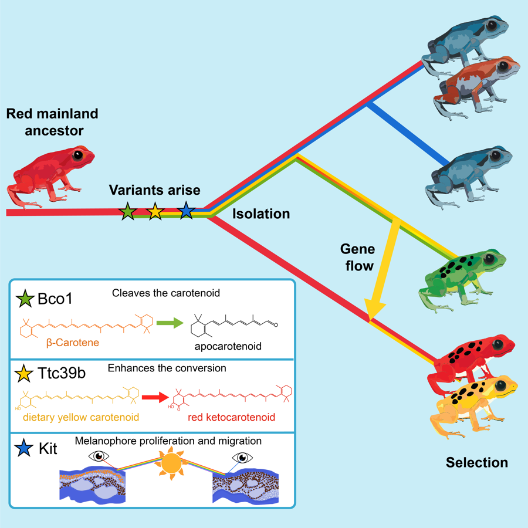
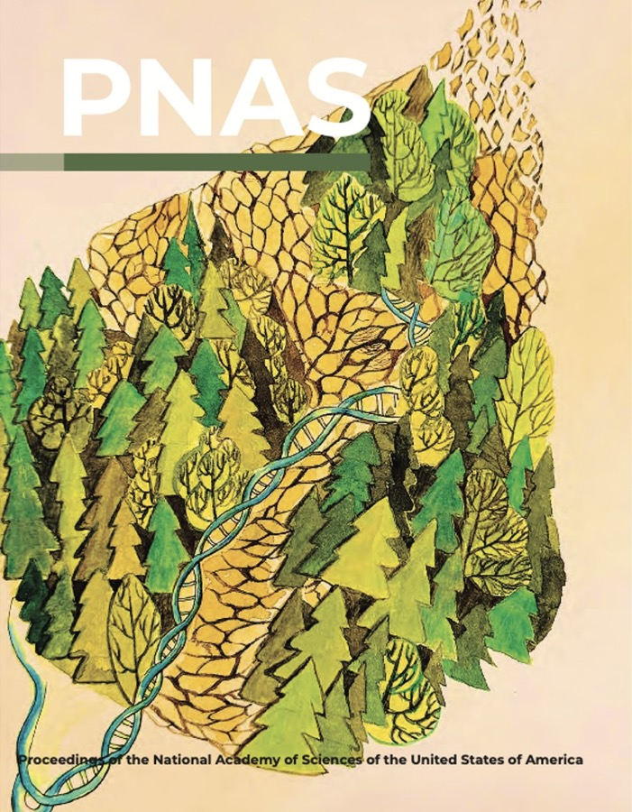

I have eternal curiosity and passion about science and research, and am more than willing to talk
with people about new ideas! I am also excited about science promotion and enjoy engaging with
young students and the community.
Here is my CV (last updated Sep 2026), and here is what
I get up to beyond research — cooking, travel, music and sport.
Feel free to contact me if you have anything to
discuss!
Research interests. I am pretty much interested in computational and population genomics.
So far I have been working on:
Evaluating the effect of genetic rescue in Florida panthers (Puma concolor)
Investigating the evolution and genetic basis of coloration in strawberry poison frogs
(Oophaga pumilio)
Revealing the herbivory evolution of mangrove crabs (Episesarma versicolor,
Parasesarma bidens, and Metopograpsus frontalis)
Genotype imputation with the Genotype-Representation Graph
Phylodynamic simulation of TB (Mycobacterium tuberculosis)
Recombination landscape analyses of human pangenome data
Realistic simulation and detection of gene conversion
Education
Ph.D. in Genetics, Genomics, and Development | Cornell University
Sep 2024 – present. Advisor:
Prof. April (Xinzhu) Wei
B.Sc. in Cell and Molecular Biology |
The Chinese University of Hong Kong
Sep 2019 – Jul 2024. Minor: Computer Science; Stream: Science, Technology and Research (STAR)
Berkeley Biosciences Study Abroad (BBSA) Program |
University of California, Berkeley
Jan 2022 – May 2022.
University-wide Exchange |
University of Toronto (St. George)
Sep 2021 – Dec 2021.
Pangenome assemblies expose the role of structural complexity in human haplotype evolution
and recent adaptation
Anguo Liu#, Lie Nie#, Lin Yuan#,
Quanyu Chen#, Drew DeHaas, Jinmin Li, Aoyue Bi, Mingyu Suo, Yanqing Sun,
Junmin Han, Haoran Gao, FeiFei Zhou, Yafei Mao, Dongya Wu, Xinzhu Wei*,
Guojie Zhang* [In revision] Nature Genetics #Co-first authors;
*Corresponding authors

Selection-driven color variation in the aposematic strawberry poison frog,
Oophaga pumilio
Diana Aguilar-Gómez, Layla Freeborn, Lin Yuan, Lydia L. Smith, Alex Guzman,
Andrew H. Vaughn, Emma Steigerwald, Adam Stuckert, Yusan Yang, Tyler Linderoth,
Matthew MacManes, Kevin J. McGraw, Corinne L. Richards-Zawacki, and Rasmus Nielsen [Curr Biol 2026] Current Biology 36, 1355–1372,
2026 [PDF][Journal][Code]

Genetic rescue of Florida panthers reduced homozygosity but did not swamp ancestral
genotypes
Diana Aguilar-Gómez, Lin Yuan, Yulin Zhang, Alexander Ochoa, Melanie Culver,
Robert R. Fitak, Dave Onorato, Kirk E. Lohmueller, and Rasmus Nielsen [PNAS 2025] Proceedings of the National Academy of
Sciences 122(31), e2410945122, 2025 [PDF][Journal][Code]
Teaching & Outreach
Graduate Teaching Assistant, BIOMG 1350 Introductory Biology: Cell and Developmental
Biology Cornell University · Ithaca, NY · Aug 2026 – present
Graduate Teaching Assistant, BIOMG 2800 Lectures in Genetics and Genomics Cornell University · Ithaca, NY · Aug 2025 – Dec 2025
Undergraduate Teaching Assistant, BCHE 2030 Fundamentals of Biochemistry School of Life Sciences, CUHK · Hong Kong SAR · Sep – Dec
2022
Voluntary Teacher, CUHK I·CARE Social Service Project Yuanfen Community · Shenzhen, China
· Oct – Nov 2019
I organised weekly voluntary teaching sessions for children at the Children Services
Center in Yuanfen, a migrant-worker community. Here is a
photo from our last session.


{kind=link}